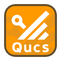
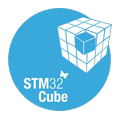
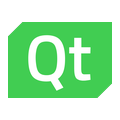
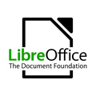
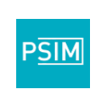
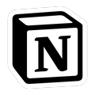

Compétences acquises en BUT GEII : essais et câblage de moteurs, transformateurs, inductances…
Maîtrise du C++ et du Python, acquise lors de ma première année de BUT et du baccalauréat NSI. Nous avons également appris à piloter des micro-contrôleurs.
Conception et vérification de systèmes électroniques, automatisation de processus industriels (VHDL, Quartus, schémas blocs) — compétences acquises en BUT GEII.
Montage et réparation de cartes électroniques.
Analyse et élaboration de schémas électriques.
Les projets et travaux pratiques en GEII sont réalisés en majorité en binôme. Mon année avec les scouts m'a également amené à travailler en équipe.

Qucs
CubeIDE
QtCreator
LibreOffice
PSIM
NotionEn recherche d'une alternance dès l'automne 2027, et d'un stage de 2 à 3 mois à partir de mai 2027. N'hésitez pas à me contacter.
07 84 24 44 99